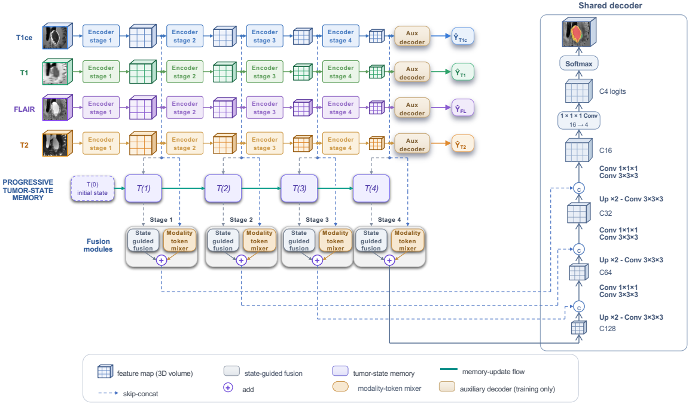
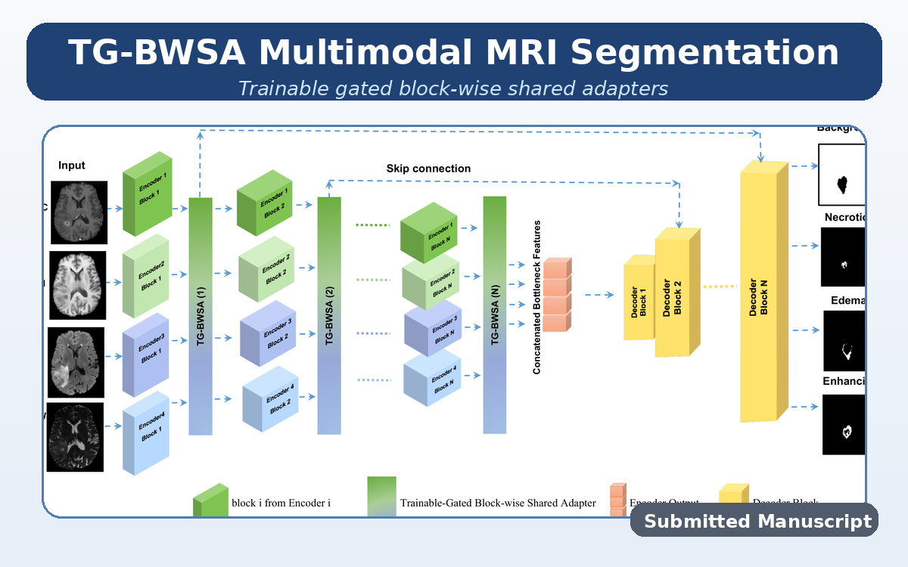
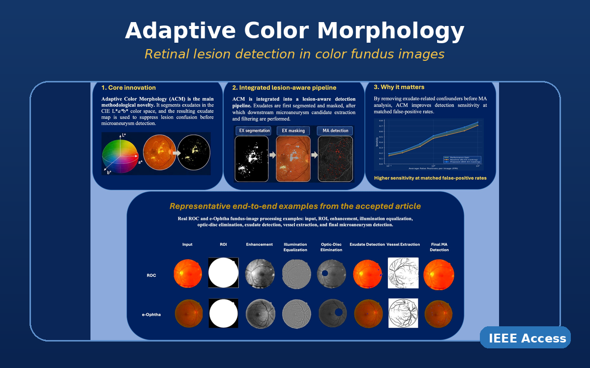
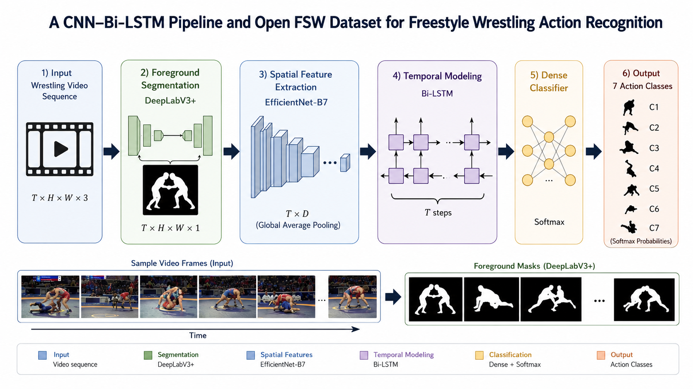
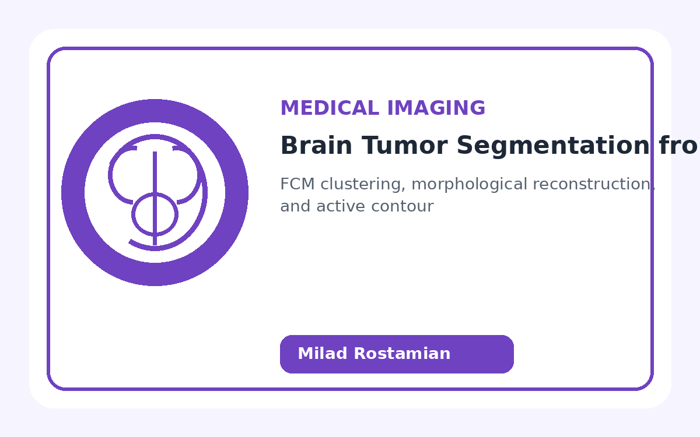
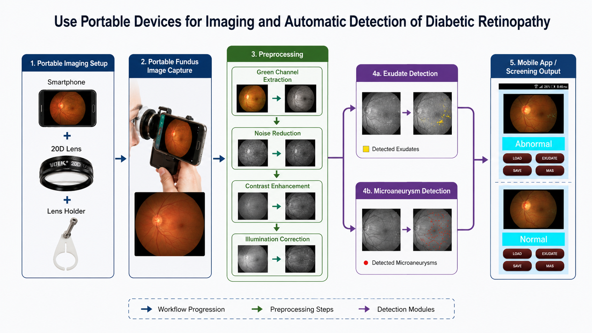

PMTM is available on arXiv. Progressive tumor-state memory for segmentation with incomplete MRI modalities. Read the preprint · Explore the code
AI research · Medical imaging · Computer vision
Milad Rostamian
Ph.D. Candidate in Artificial Intelligence
Learning from multimodal images.
Building efficient, reliable AI systems.
Latest updates
Research news
Our shared-adapter study is available on arXiv. Parameter-efficient multimodal brain tumor segmentation with BWSA and TG-BWSA. Read the preprint
About
I am a Ph.D. Candidate in Artificial Intelligence at the Iran University of Science and Technology (IUST). My research focuses on medical image analysis, computer vision, multimodal learning, self-supervised learning, and efficient deep learning methods for robust visual understanding.
AI Researcher | Computer Vision & Medical Image Analysis
My Ph.D. research investigates brain tumor image segmentation using combined CNN–Transformer architectures, self-supervised learning, and robust deep learning strategies for multimodal MRI analysis.
- Affiliation: Iran University of Science and Technology (IUST)
- Position: Ph.D. Candidate in Artificial Intelligence
- Research Visit: Computer Vision Lab, ETH Zürich
- Location: Tehran, Iran
- Main Areas: AI, Computer Vision, Medical Imaging
- Tools: Python, PyTorch, TensorFlow, OpenCV
- Research: Multimodal Learning, Self-Supervised Learning
- Email: milad.chessmaster@gmail.com
I am interested in developing reliable and reproducible AI systems for medical image analysis, visual recognition, and document intelligence. My recent work also includes LLM-based systems, parameter-efficient fine-tuning, and applied AI solutions for real-world decision-support tasks.
Papers & open research
Publications
Selected journal articles, preprints, and conference work. Paper, code, and citation links are collected below.
2026 Recent work

Progressive multi-scale tumor-state memory for incomplete multimodal brain tumor segmentation
A progressive tumor state carries evidence across encoder stages to guide segmentation from incomplete sets of MRI modalities.
arXivPDFCode
Cite
@misc{rostamian2026pmtm,
title = {Progressive multi-scale tumor-state memory for incomplete multimodal brain tumor segmentation},
author = {Rostamian, Milad and Mohammadi, Mohammadreza and Soryani, Mohsen},
year = {2026},
eprint = {2610.26457},
archivePrefix = {arXiv},
primaryClass = {eess.IV},
url = {https://arxiv.org/abs/2610.26457}
}
Parameter-Efficient Multimodal Brain Tumor Segmentation With Stage-Wise Shared Adapters
BWSA and its trainable-gated variant share compressed features between modality encoders with a small parameter overhead.
arXivPDFCode
Cite
@misc{rostamian2026sharedadapters,
title = {Parameter-Efficient Multimodal Brain Tumor Segmentation With Stage-Wise Shared Adapters},
author = {Rostamian, Milad and Mohammadi, Mohammadreza and Konukoglu, Ender and Soryani, Mohsen},
year = {2026},
eprint = {2610.18571},
archivePrefix = {arXiv},
primaryClass = {cs.CV},
url = {https://arxiv.org/abs/2610.18571}
}
Designing an Adaptive Color Morphology Operator for Exudates and Microaneurysms Detection in Color Fundus Images
PaperPDFProject
Cite
@article{rostamian2026adaptivecolor,
title = {Designing an Adaptive Color Morphology Operator for Exudates and Microaneurysms Detection in Color Fundus Images},
author = {Rostamian, Milad and Shekari, Motahare},
journal = {IEEE Access},
year = {2026},
volume = {14},
pages = {54937--54953},
doi = {10.1109/ACCESS.2026.3680927},
url = {https://doi.org/10.1109/ACCESS.2026.3680927}
}
A CNN–Bi-LSTM Pipeline and Open FSW Dataset for Freestyle Wrestling Action Recognition
PaperPDFCode & dataset
Cite
@article{rostamian2026wrestling,
title = {A {CNN--Bi-LSTM} pipeline and open {FSW} dataset for freestyle wrestling action recognition},
author = {Rostamian, Milad and Mottaghi, Ali and Soryani, Mohsen},
journal = {Scientific Reports},
year = {2026},
volume = {16},
pages = {14632},
doi = {10.1038/s41598-026-44782-0},
url = {https://doi.org/10.1038/s41598-026-44782-0}
}2024

Brain Tumor Segmentation from MRI Using FCM Clustering, Morphological Reconstruction, and Active Contour
PaperPDF
Cite
@article{shekari2024braintumor,
title = {Brain tumor segmentation from {MRI} using {FCM} clustering, morphological reconstruction, and active contour},
author = {Shekari, Motahare and Rostamian, Milad},
journal = {Multimedia Tools and Applications},
year = {2024},
volume = {83},
pages = {42973--42998},
doi = {10.1007/s11042-023-17233-5},
url = {https://doi.org/10.1007/s11042-023-17233-5}
}Conference work

Use Portable Devices for Imaging and Automatic Detection of Diabetic Retinopathy
6th Annual Conference of Ophthalmology and Vision Sciences Research, Tehran.
Poster / full text
Cite
@misc{rostamianportablescreening,
title = {Use portable devices for imaging and automatic detection of diabetic retinopathy},
author = {Rostamian, Milad and Pourreza, Hamidreza and Hosseini, Maryam},
howpublished = {Conference presentation, 6th Annual Conference of Ophthalmology and Vision Sciences Research, Tehran},
url = {https://www.researchgate.net/publication/360306704}
}Research & practice
Skills
Methods and tools I use in research and applied AI.
Medical image analysis
Multimodal MRI, brain tumor segmentation, and retinal image analysis.
Deep learning & vision
Research implementation, visual recognition, and model evaluation.
Efficient AI & LLM systems
Efficient model adaptation and document intelligence.
Research workflows
Experiment design, ablation studies, and technical communication.
Resume
A concise overview of my academic background, research experience, industry work, teaching activities, and selected honors.
Summary
Milad Rostamian
Ph.D. Candidate in Artificial Intelligence with research experience in medical image analysis, brain tumor segmentation, computer vision, multimodal learning, self-supervised learning, and applied AI/LLM systems.
- Tehran, Iran
- milad.chessmaster@gmail.com
- milad.rostamian@comp.iust.ac.ir
Education
Ph.D. in Artificial Intelligence
Sep. 2020 - Present
Iran University of Science and Technology (IUST), Tehran, Iran
- Thesis: Brain Tumor Image Segmentation Using a Combined CNN–Transformer Architecture and Self-Supervised Learning
- Supervisor: Dr. Mohsen Soryani
- GPA: 18.79 / 20.0
M.Sc. in Artificial Intelligence
Sep. 2014 - Sep. 2017
Islamic Azad University, Mashhad Branch, Mashhad, Iran
- Thesis: Designing Adaptive Color Morphological Operators for the Detection of Diabetic Retinopathy Lesions
- Supervisor: Prof. Hamidreza Pourreza
- GPA: 16.07 / 20.0
B.Sc. in Computer Engineering
Sep. 2008 - Sep. 2013
Quchan University of Advanced Technologies Engineering, Quchan, Iran
- Thesis: Active Learning Based on Locally Linear Reconstruction
- Supervisor: Dr. Seyed Hossein Ghafarian
Honors & Awards
- Ranked 2nd among 6 Ph.D. students in computer engineering based on cumulative coursework GPA.
- Ranked 15th out of 950+ applicants in the national Ph.D. entrance exam in computer engineering, Artificial Intelligence.
Research & Industry Experience
R&D Engineer – AI / LLM Systems
Jul. 2025 - Present
Faranegar Co., Tehran, Iran
- Lead R&D on AI systems for Central Bank-related applications, focusing on document intelligence and large language models.
- Worked on fine-tuning open-source LLMs, including Mistral and DOTS, for financial and document-understanding tasks.
- Applied parameter-efficient tuning methods, including LoRA and adapter-based strategies, under limited-compute constraints.
- Developed model distillation pipelines for lightweight and production-oriented student models.
Research Intern – Medical Image Segmentation
Sep. 2024 - Mar. 2025
Computer Vision Lab, ETH Zürich, Switzerland
- Collaborated with Prof. Ender Konukoglu on 3D MRI segmentation research, with emphasis on robustness and generalization.
- Implemented and benchmarked UNet-style encoder–decoder and transformer-based segmentation models.
- Conducted systematic ablation studies and metric-driven error analysis in an interdisciplinary research setting.
Research Collaborator – Applied AI in Medicine
2022 - 2024
Iran Telecommunication Research Center (ITRC), Tehran, Iran
- Contributed to applied AI projects in medical imaging, bridging research and real-world integration.
- Built training and validation pipelines with emphasis on data quality assurance, reproducibility, and robust evaluation.
- Worked with multidisciplinary teams to prepare deliverables for technology transfer and downstream integration.
Research Assistant – Ophthalmology & Computer Vision
Sep. 2014 - Sep. 2020
Mashhad Islamic Azad University & IUST, Iran
- Developed diabetic retinopathy lesion detection pipelines for retinal fundus images.
- Focused on microaneurysms and exudates using adaptive color morphology and classical vision methods.
- Developed and deployed Android-based computer vision applications in medical imaging and real-time inference settings.
Teaching & Service
Teaching Assistant
Sep. 2020 - Sep. 2023
Iran University of Science and Technology (IUST), Tehran, Iran
- Courses: Machine Vision, Basics of Machine Vision.
- Supported teaching in image processing, feature extraction, segmentation, and evaluation.
Reviewer
Professional Service
- Reviewer for Multimedia Tools and Applications; reviewed 12+ manuscripts in computer vision, image analysis, and deep learning.
Selected Projects
Selected academic and applied projects in medical imaging, computer vision, and mobile AI systems.
Android-based Diabetic Retinopathy Lesion Detection
A mobile-oriented retinal image analysis pipeline for practical screening and lesion detection.
Android-based Drowsy Driver Detection System
A real-time mobile vision application for eye-status monitoring and fatigue warning alerts.
Android-based License Plate Recognition System
A real-time license plate recognition system with image preprocessing, plate detection, and character recognition.
Contact
Please feel free to reach out for research collaboration, academic discussion, or applied AI projects.
Location
Tehran, Iran
GitHub
Research Areas
Medical image analysis, brain tumor segmentation, computer vision, multimodal learning, self-supervised learning, efficient model adaptation, and LLM-based document intelligence.
For academic collaboration or project-related inquiries, email is the preferred contact method.